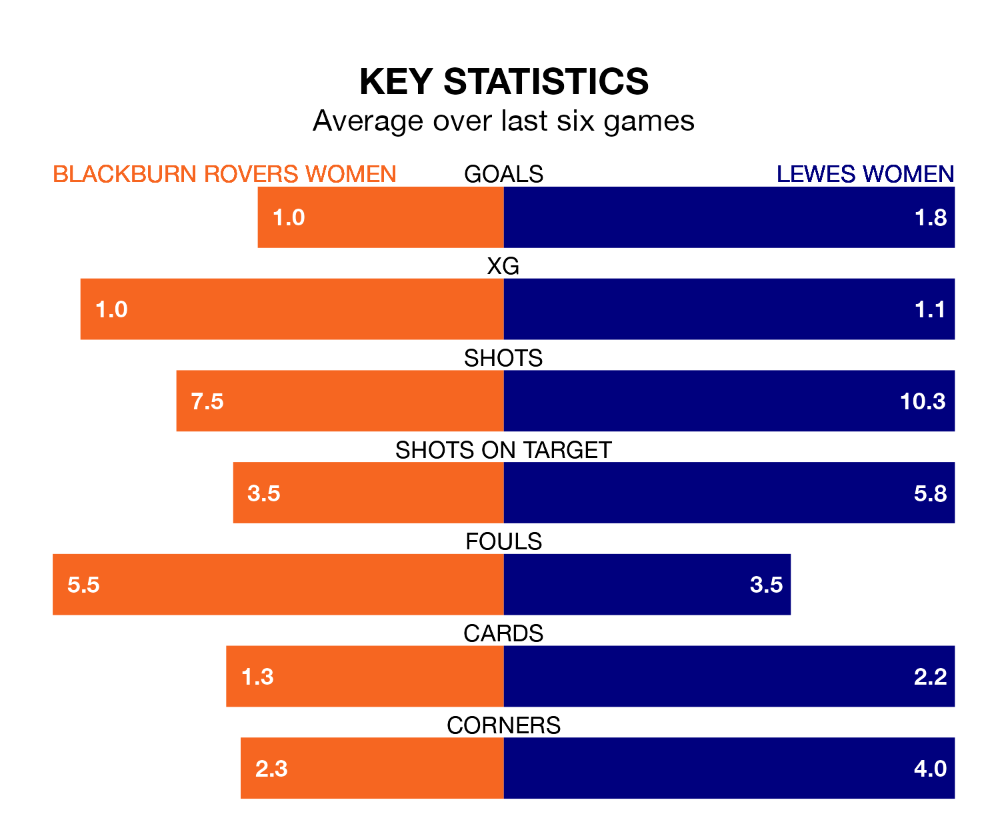

Struggling Lewes Women face Blackburn Rovers Women away at the Lancashire FA County Ground on Monday looking to build on a win in their last league outing.
After securing all three points with a 2-1 victory over Sheffield United Women on March 3, Lewes sit 11th in the FA Women's Championship.
They travel to play a Blackburn Rovers side seventh in the standings, who were held in their last match, 2-2 against Durham Women.
With Alexandra Brooks between the sticks, Blackburn Rovers can rely on one of the league's safest pair of hands. She has kept five clean sheets in her 15 appearances this season, and only one other 'keeper – Sunderland Women's Claudia Moan – has been able to prevent the opposition scoring on more occasions in the FA Women's Championship.
In Lewes's net, Sophie Whitehouse has one clean sheet in 14 games.
In the last 10 years, Blackburn Rovers and Lewes have played each other on eight occasions. Blackburn Rovers won three of them and Lewes five.
On average, Blackburn Rovers scored 0.6 goals and Lewes 1.4 in those matches.
Their last meeting was on October 1, when Blackburn Rovers won 2-0 away.
The hosts are in mixed form in the FA Women's Championship, with two wins and a draw from their last six games.
With two wins and three draws over that period, the away team's form is slightly better – they have taken nine points from 18, compared to Blackburn Rovers' seven.
With 13 goals in 15 games so far this season, Blackburn Rovers are the league's lowest scorers with 0.9 goals per game. And they are conceding more than average, letting in 24 goals at a rate of 1.6 per game.
Lewes are also below average scorers, with 1.0 goal per game, compared to a league average of 1.4. They have conceded 1.7 goals per game.
Updated: 09:34 (UTC), 08/03/24